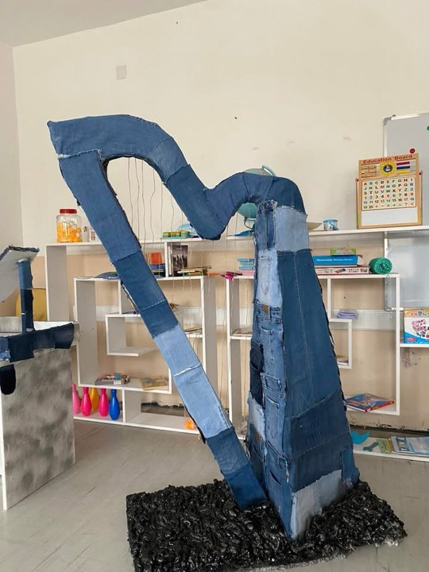

In this project, I explored the harp, an ancient and captivating musical instrument. I delved into its history, design, and role in various cultures. The harp is known for its elegant sound and unique playing technique, making it a cherished instrument in classical music and beyond.In this project, I focused on cervical cancer, a serious health issue affecting women worldwide. I researched its causes, symptoms, and prevention strategies, highlighting the importance of regular screenings and early detection in reducing risk. Awareness of cervical cancer is crucial for promoting women's health and well-being.